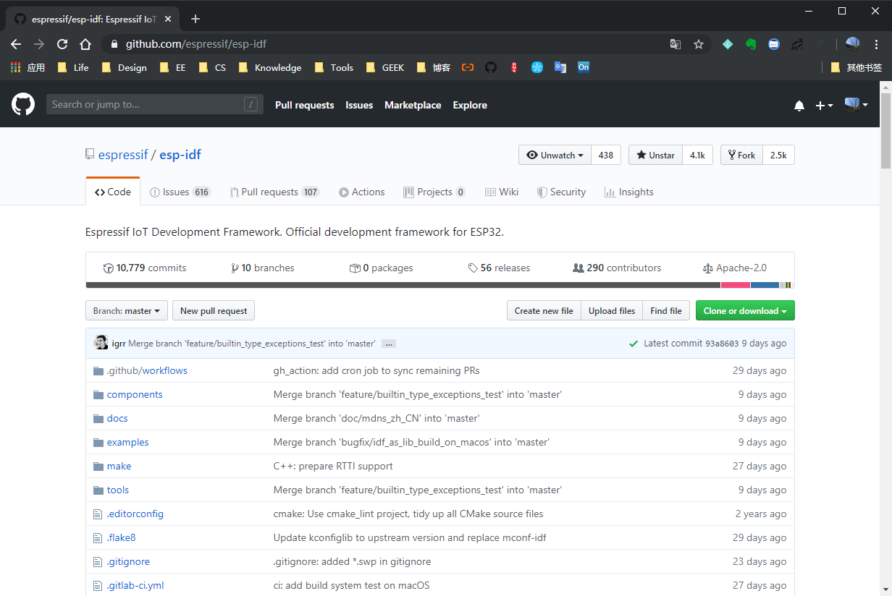
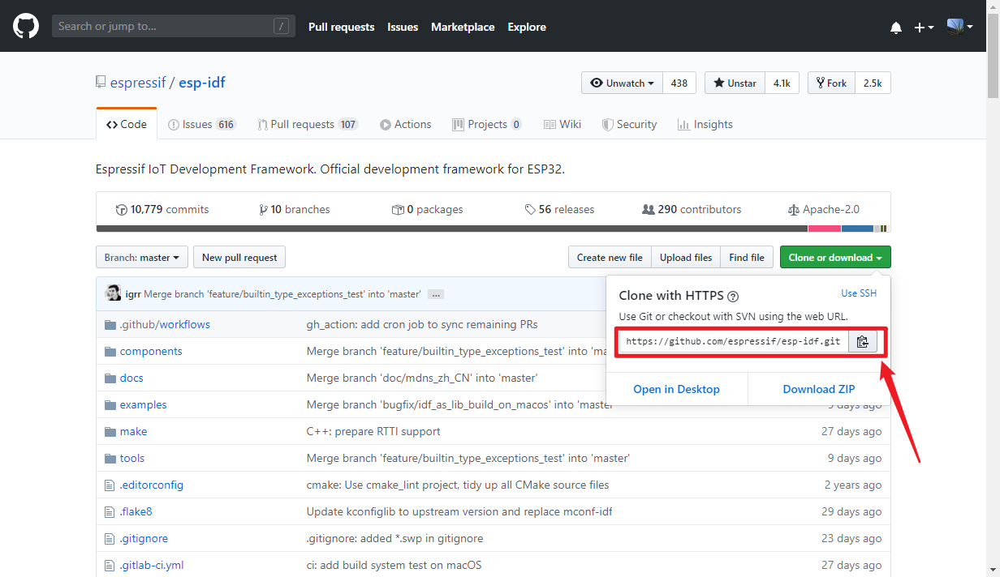
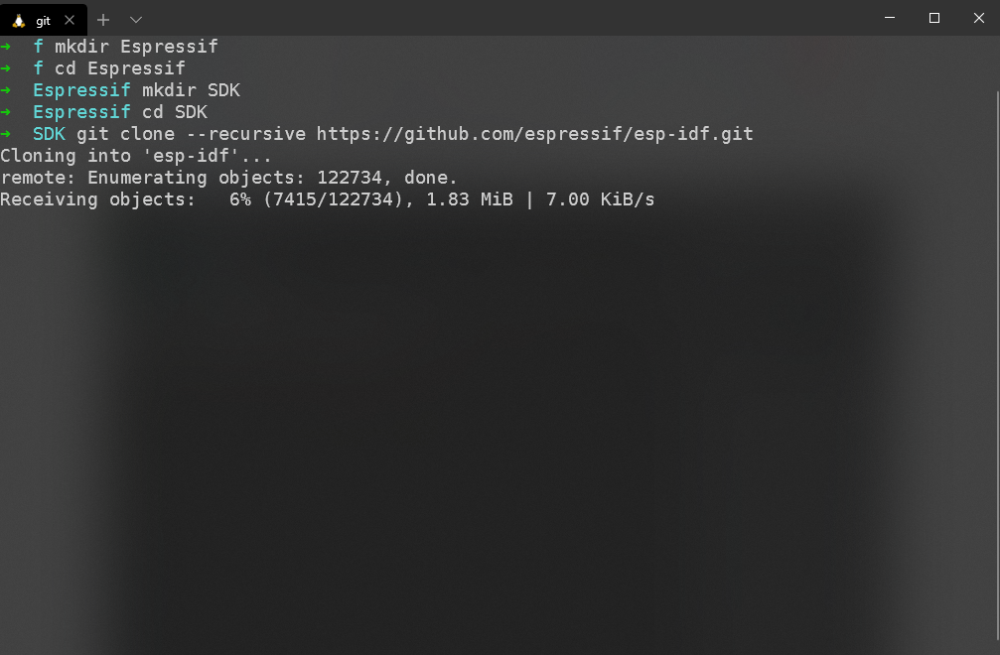

一、前言
摘要:
在前面我们已经安装好了 WSL 以及 VS Code, 那么下面我们就搭建 ESP32 的开发环境
二、下载并配置 ESP32 编译工具链及SDK
1. 下载 ESP32 SDK : ESP-IDF
从 Github 下载
打开乐鑫官方 ESP-IDF 的 GitHub 页面: Espressif/esp-idf: https://github.com/espressif/esp-idf

复制 Repositories 地址,打开 Terminal Clone esp-idf
添加参数
--recursive确保拉取所有子模块
**[terminal]
git clone --recursive https://github.com/espressif/esp-idf.git


我们这里使用 git checkout 检出 release/V4.0 分支进行开发,并拉取更新所有子模块
**[terminal]
cd esp-idf
git checkout release/V4.0
git submodule update --init --recursive
- 网盘下载
2. 下载并解压 ESP32 编译工具链
我们这里使用的是 ESP-IDF release/v4.0 对应的工具链版本为 2019r2, 关于编译链官方说明请查看 -> Linux 平台工具链的标准设置(传统 GNU Make)
Linux 版的 ESP32 工具链可以从 Espressif 的网站下载(我们这里使用 x64 版本):
64 位 Linux: https://dl.espressif.com/dl/xtensa-esp32-elf-gcc8_2_0-esp-2019r2-linux-amd64.tar.gz
32 位 Linux: https://dl.espressif.com/dl/xtensa-esp32-elf-gcc8_2_0-esp-2019r2-linux-i686.tar.gz
下载压缩文件之后，解压到指定目录中(我这里解压到 /mnt/f/Espressif/Toolchain/):
64 位 Linux:
mkdir -p /mnt/f/Espressif/Toolchain/
cd /mnt/f/Espressif/Toolchain/
tar -xzf ./xtensa-esp32-elf-gcc8_2_0-esp-2019r2-linux-amd64.tar.gz
32 位 Linux:
mkdir -p /mnt/f/Espressif/Toolchain/
cd /mnt/f/Espressif/Toolchain/
tar -xzf ./xtensa-esp32-elf-gcc8_2_0-esp-2019r2-linux-i686.tar.gz
3. 安装依赖软件包
sudo apt-get install git wget libncurses-dev flex bison gperf python python-click python-pip python-setuptools python-serial python-cryptography python-future python-pyparsing python-pyelftools cmake ninja-build ccache

3. 配置系统环境变量(WSL)
将编译链路径/ESP-IDF路径导出到系统环境变量中
vim ~/.profile
按 i 进入插入模式,导出工具链及 ESP-IDF 目录到系统环境变量中(工具链路径/esp-idf 路径根据实际情况填写)
永久生效配置环境变量
export PATH="/mnt/f/Espressif/Toolchain/xtensa-esp32-elf/bin:$PATH" export IDF_PATH="/mnt/f/Espressif/SDK/esp-idf"临时配置环境变量
alias ESP32='export PATH="/mnt/f/Espressif/Toolchain/xtensa-esp32-elf/bin:$PATH"' alias ESP32_IDF='export IDF_PATH="/mnt/f/Espressif/SDK/esp-idf"'按
esc退出到命令行模式,输入:wq回车(w:wirte q: quit) 写入文件并退出立即生效更改(否则需要重新打开
Terminal)
**[terminal]
**[command source ~/.profile]
永久生效/临时配置的区别:
永久生效配置不必在每次重新打开 Terminal 时,输入 ESP32/ESP32_IDF 来生效 ESP32 开发环境，但相应的缺点就是每次当你在两个版本的 SDK 的切换开发时需要去修改 ~/.profile 文件;
如果在~/.profile 如下配置即可使用 ESP32_V3/ESP32_V4 去切换编译链版本;使用 ESP32_IDF_V3/ESP32_IDF_V4 去切换 SDK 版本.
**[terminal]
alias ESP32_V3='export PATH="/mnt/f/Espressif/Toolchain/xtensa-esp32-elf_v3/bin:$PATH"'
alias ESP32_IDF_V3='export IDF_PATH="/mnt/f/Espressif/SDK/esp-idf_v3"'
alias ESP32_V4='export PATH="/mnt/f/Espressif/Toolchain/xtensa-esp32-elf_v4/bin:$PATH"'
alias ESP32_IDF_V4='export IDF_PATH="/mnt/f/Espressif/SDK/esp-idf_v4"'
三、VScode 编译运行/调试 ESP32
在 VSCode 中编译运行 HelloWorld
打开 VSCode, Ctrl+Shift+P 输入 shell, 选择 WSL
编译工程:
make
完整编译工程:
make all
指定线程数编译工程:
make -j[N]
最大线程数编译工程:
make -j
编译并下载到指定串口:
make -j flash ESPPORT=/dev/ttySX
编译下载到指定串口并查看串口输出:
make -j flash monitor ESPPORT=/dev/ttySX